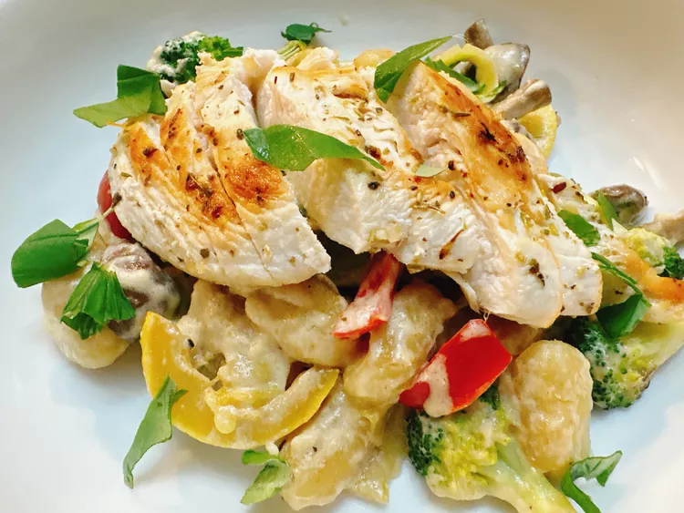

Chicken Goncchi

Description
This creamy chicken gnocchi cooks in one pan, from chicken to veggies to creamy sauce, and uses convenient store-bought gnocchi.
It's a versatile recipe, and can be the perfect meal to use up scraps of most vegetables.
Ingredients
Chicken
- 1 teaspoon butter
- 2 teaspoons olive oil
- 2 (8 ounce) skinless, boneless chicken breasts
- 1 teaspoon Italian seasoning
- salt and freshly ground black pepper to taste
Gnocchi
- 2 teaspoons butter
- 1 pound gnocchi
Vegetables
- 2 cup bite-sized broccoli florets
- 1 zucchini, sliced into thin ribbons
- 1 yellow squash, cut into half moons
- 1/2 cup quartered mushrooms
- 1/4 teaspoon Italian seasoning
- 2 cloves garlic, minced
- 1/4 cup diced red bell pepper
Cream Sauce
- 2 teaspoons butter
- 2 tablespoons minced shallot (about 1 shallot)
- 1 cup chicken broth
- 3/4 cup half-and-half
- 1/4 cup heavy cream
- 2 tablespoons all-purpose flour
- 1 tablespoon lemon juice, or more to taste
Steps
- Heat oil and butter in a heavy skillet over medium heat. Slice chicken breasts in half horizontally to create thin breasts.
Sprinkle with seasonings.
- Place chicken in the skillet and cook until golden brown on each side, about 4 minutes. Remove chicken to a plate and keep warm.
- In the same skillet, melt butter. Add gnocchi and season with salt and pepper. Cook until gnocchi is golden, 6 to 7 minutes.
Remove gnocchi to a bowl.
- Add broccoli, zucchini, squash, mushrooms, and bell pepper and season with Italian seasoning. Saute until vegetables are crisp and tender,
5 to 7 minutes, depending on the thickness of the vegetables. Add minced garlic during the last 45 seconds; quickly saute until fragrant.
Remove vegetables to the same bowl with gnocchi.
- Melt 2 teaspoons butter in the same skillet; and cook shallot until softened and fragrant, about 3 minutes. Pour in chicken broth,
half-and-half, and heavy cream. Whisk in flour, and cook, whisking to prevent lumps, until thickened, about 3 minutes.
Squeeze in lemon juice to taste.
- Combine gnocchi and vegetables with cream sauce, and top with cooked chicken.